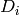
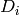

HAMIL¶
HAMIL contains the non-zero elements of the Hamiltonian in three columns:
i j Hij
where:
Hij
.
i,j are indices for the
determinants, with i:math:le j, and increasing i.
 corresponds to the i-th determinant as given in DETS.
HAMIL contains the non-zero elements of the Hamiltonian in three columns:
i j Hij
where:
Hij
i,j are indices for the
 corresponds to the i-th determinant as given in DETS.